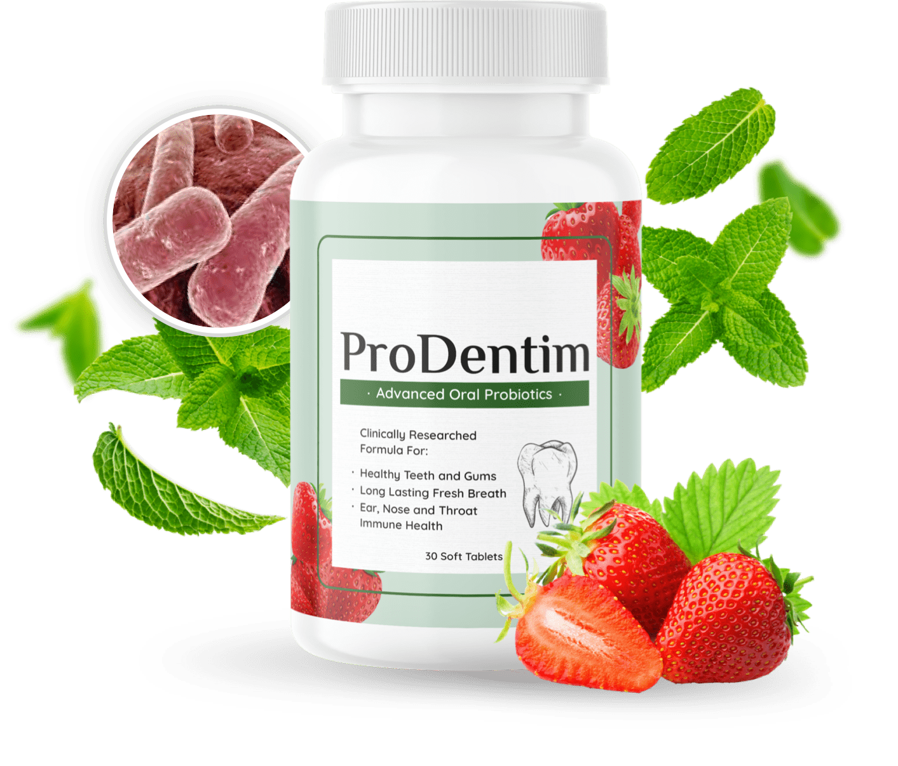

What is ProDentim? An Oral Probiotic Revolution
ProDentim is a unique, revolutionary dental product unlike anything you've ever tried. It comes in the form of a delicious, chewable probiotic candy that works to rebalance the flora in your mouth. Many people don't realize that a healthy mouth relies on a healthy "microbiome," which is a growing trend in oral care.
By using a specific blend of 3.5 billion probiotic strains and essential nutrients, ProDentim tackles the root cause of many dental problems, from bad breath to gum issues, by creating a healthier environment where good bacteria can thrive.
Get ProDentim From the Official Site Today!Experience Unbelievable Benefits with ProDentim
A Dazzling Smile & Fully Rejuvenated Gums
ProDentim is designed to bring back the natural health of your gums and teeth, giving you a confidence-boosting smile. It helps strengthen teeth and fight off harmful bacteria that can lead to decay and inflammation.
Goodbye to Bad Breath for Good
Instead of just masking bad breath, ProDentim addresses its cause. By populating your mouth with beneficial bacteria, it helps neutralize the odor-causing bacteria, giving you fresh breath that lasts all day.
Unexpected Health Bonuses
The unique probiotic formula also supports your respiratory tract and may help with allergies. Plus, users report improved digestive health and even support for weight management, making it a powerful all-in-one supplement.
Key Ingredients That Make the Difference
ProDentim's power comes from its carefully selected ingredients, including:
- Lactobacillus Paracasei: Supports the health of your gums and helps keep your sinuses free and open.
- B.lactis BL-04®: A powerful probiotic that aids in restoring good bacteria, promoting a healthy respiratory tract, and supporting your immune system.
- Lactobacillus Reuteri: Known for its strong anti-inflammatory properties, it helps create a balanced and healthy oral environment.
PLUS a Proprietary Blend of 4 Plants & Minerals:
- Inulin: A prebiotic that nourishes the good bacteria in your mouth.
- Malic Acid (from Strawberries): An acid that helps maintain the natural whiteness of your teeth.
- Tricalcium Phosphate: An essential mineral that strengthens teeth.
- Peppermint: A natural anti-inflammatory that contributes to fresh breath.
What Our Customers Say
Don't just take our word for it. Based on over 95,000 verified reviews, people are thrilled with ProDentim!
"I've always taken great care of my teeth, but I never felt like it was enough. Now, for the first time, my teeth feel absolutely incredible."
✓ Verified Purchase"It's unbelievable how much I love ProDentim. My dentist recommended it, and I'm so glad she did! My breath has never felt fresher."
✓ Verified Purchase"My gums have never looked this good. It's so nice not to have to worry about my dental health anymore. I truly adore this product!"
✓ Verified PurchaseYour Investment is 100% Protected
ProDentim comes with a full 60-day money-back guarantee. If you are not completely impressed with the results—from your gums to your smile—simply contact the support team within 60 days, and they will refund every single penny. No questions asked.
Order Now, Risk-Free!⚠️ OFFICIAL SITE WARNING!
To ensure you get the **authentic product** and qualify for the 60-day money-back guarantee, you MUST purchase ProDentim directly from the **official website**. Avoid third-party sites like Amazon or eBay, which may sell counterfeit or expired products.
Click the button above to be redirected to the secure order page and see today's exclusive offers.